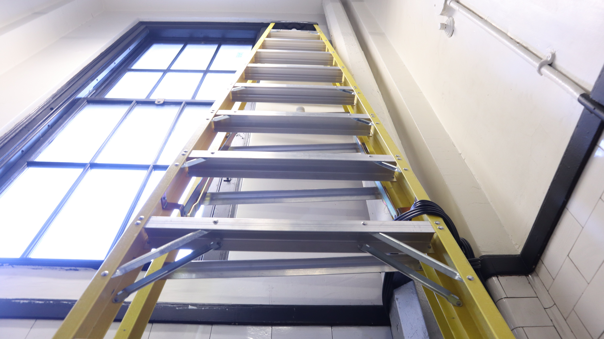
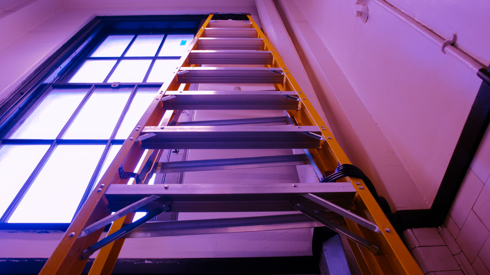
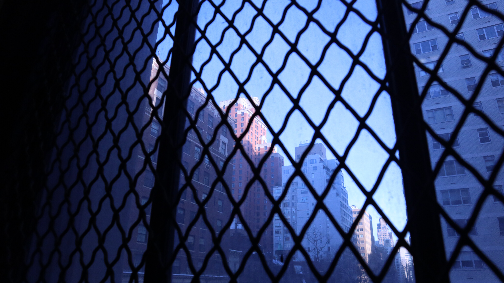
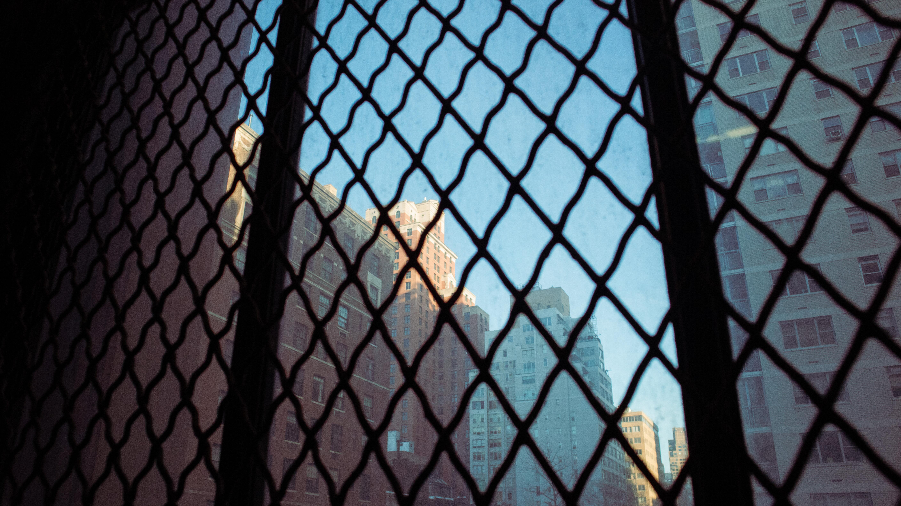
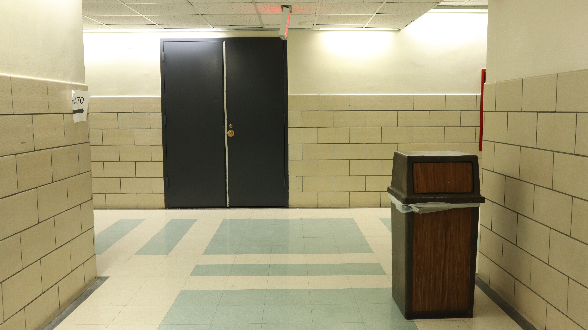
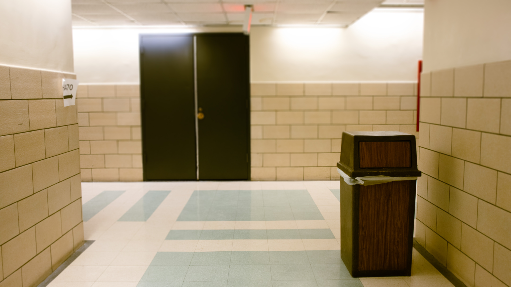

We were editing images in class and Professor Hu was instructing us to push the colors, so I turned this mundane ladder composition into a Brooklyn rave. The deep depth of field creates an illusion where the far end of the ladder is still in focus. I was also able to straighten the ladder relative to the crop which was satisfying.


I am using this photo as my shallow depth of field because the foreground, the bars over the windows, were blurred and turned to vague shadows framing the far off buildings. The before photo is very blue because I had set the white point of the camera to fluorescent, and it ended up making all the outdoor RAW files very blue and dreamy. I color corrected it slightly, pushing the blues in different parts that the original and bringing in some red, along with a more flattering crop.


With the artificial depth of field assignment, I used one of the only images I captured with a defined foreground subject. The blur made it feel more homely and less intimidating, so I followed it up with a slightly warmer color edit.